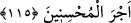

İSTİKÂMET VE NAMAZ
112. O halde seninle beraber tevbe edenlerle birlikte emrolunduğun gibi dosdoğru
ol! Aşırı da gitmeyin. Çünkü O, yaptıklarınızı çok iyi görendir.
113. Sakın zulmedenlere meyletmeyin, sonra size ateş dokunur. Sizin Allah’tan
başka dostlarınız yoktur. Sonra size yardım da edilmez.”
114. Gündüzün iki ucunda ve gecenin gündüze yakın zamanlarında namaz kıl.
Çünkü iyilikler, kötülükleri giderir. Bu, öğüt almak isteyenlere bir hatırlatmadır.
115. Sabret, çünkü Allah güzel davrananların mükâfâtını zâyi etmez.
“O halde seninle beraber tevbe edenlerle birlikte emrolunduğun gibi dosdoğru ol!”
Fakir (Bursevî) der ki: Yâni ey Muhammed, öncekilerin bu halleri ile peygamber
kardeşlerin ve onlara inananların, kavimlerinden gördükleri eziyetlere tahammül
ettikleri gibi sen de tahammül et. Onlar, Allah’ın emri gelene kadar O’nun yolunda
dosdoğru oldukları gibi sen de tevhid ve Allah’a dâvet vazifen üzerinde Allah Teâlâ’nın
sana emrettiği gibi istikâmet üzere dosdoğru olmaya devam et.
Seninle beraber şirkten ve küfürden tevbe eden ve seninle birlikte îmân edenler de
emrolundukları gibi dosdoğru olsunlar.
Âyetteki ‘birlikte’likten maksad, îmândaki beraberliktir. Yoksa îmân edenlerin Hz.
Peygamber (a.s.) ile zikredilenlerden tevbe etme konusunda beraberlikleri söz konusu
değildir. Çünkü peygamberler, küfürden korunmuşlardır, mâsumdurlar. Yine onlar,
kendilerine vahiy gelmeden önce de sonra da kasden büyük günah işlemekten icmâen
mâsumdurlar. Ancak öyle görünüyor ki tevbenin kendisinde ortak oluş, beraberlik
olması için yeterlidir. Dolayısıyla tevbe edilen şeyde de ortak olmak gerekmez. Hz.
Peygamber (s.a.) bir hadiste vârid olduğu üzere her gün yetmiş defadan fazla istiğfar
eder, Allah’tan bağışlanma dilerdi.[175] Müfti Sa‘dî’nin Hâşiye’sinde böyle
geçmektedir.
Fakir (Bursevî) der ki: Böyle bir makamdaki tevbe, belki de insanın ilk halinden